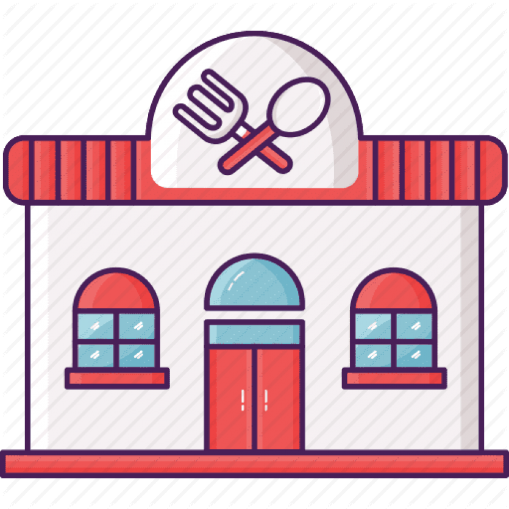

Odin's Tiffins
Welcome to Odin Tiffins — where idlis are fluffier than your dreams, dosas are wider than your problems, and sambhar flows like gossip at a family wedding. Come hungry, leave in a food coma!
Location
📍 42, Anna Banana Street, Foodie Nagar, Bengaluru - 560001